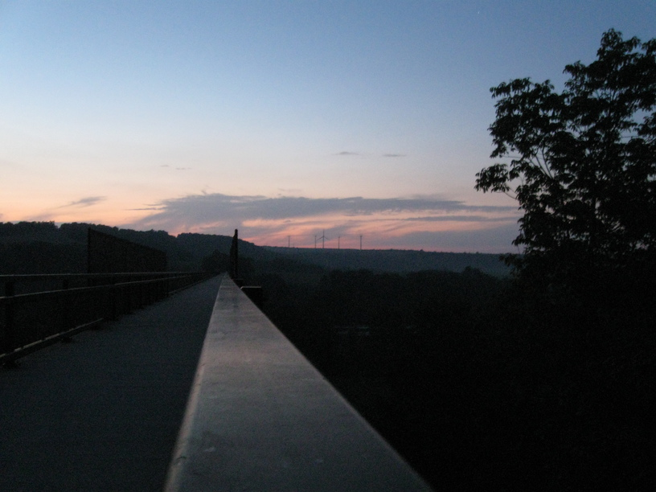

20 Sep 08, Salisbury Viaduct, Meyersdale, PA
It was a four-tunnel, two-state, and sixty-six mile day. I finished the C&O, stopped in Cumberland for lunch and to pick up some supplies, and rode the first 30ish miles of the GAP. As I neared Cumberland, I passed two cyclists--obviously tourers by their loads--going the other direction. They had stopped & I was moving slowly enough that I had time to ask them how far they were going. Quickly I learned it was not how far they were going, but how far they had come. They said they started at Lake Huron. THat was enough for me to stop and chat. They had ridden Adventure Cycling's Great Lakes route*, then the Pittsburgh spur of the UGRR route, then the GAP to Cumberland. I told them of my plans and I discovered that they had ridden the segment of the Southern Tier that I plan to ride, so we exchanged contact info, and I'll pester them with questions later via email.
As people see me riding along, fully loaded, they often ask if I'm "doing the whole trail." My newest response is "And then some!" Fun. :-)
* Not sure what route this is, as it's not listed on Adventure Cycling's website
